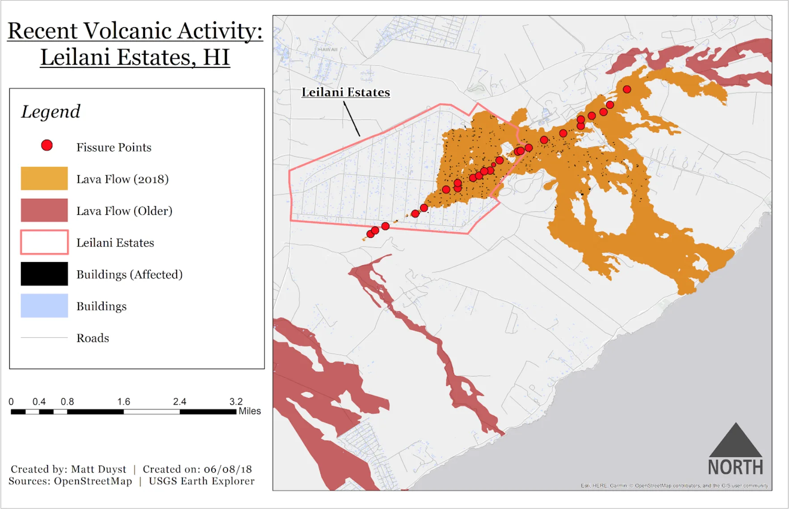
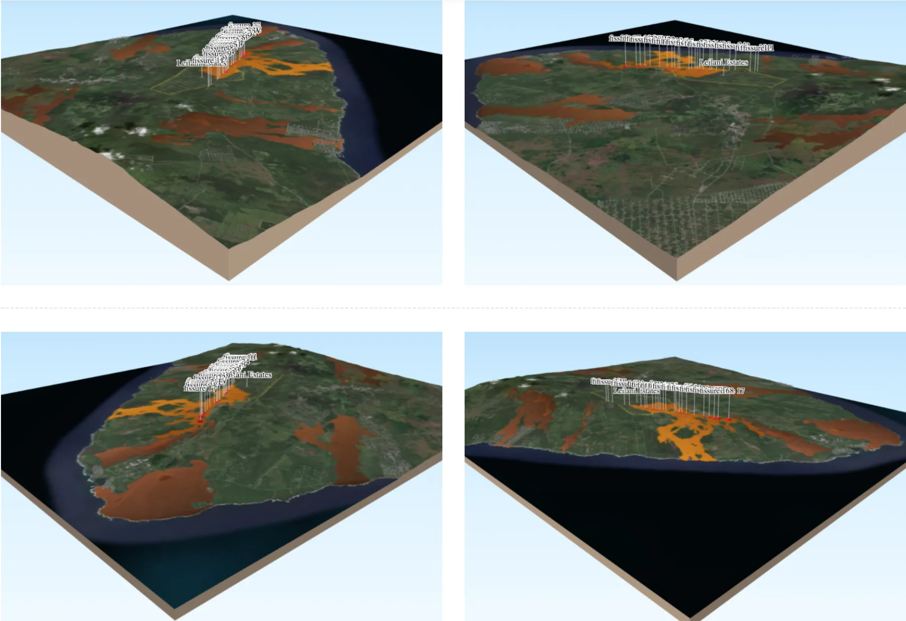

UCLA coursework, 2014 to 2018
Three-Dimensional Mapping of Natural Disaster Scenarios: Leilani Estates, HI (2018)

Abstract:
The Hawaii islands were construed by volcanic activity, both past and present. In 2018, lava began flowing from steaming ground cracks in Leilani Estates on the Big Island. The maps produced below showcase this volcanic crisis - a tranquil place of palm trees transformed into hostility and hot rock. The three month-long eruption of the Kilauea Volcano formed 24 volcanic fissure vents, destroyed 200 homes, and wreaked havoc on communities that forced the diaspora of roughly 2,000 people.
The static map below illustrates the buildings at harm in Leilani Estates, along with the 24 volcanic fissures created from the Kilauea eruption. Areas previously affected by volcanic activity are also highlighted.
A three-dimensional rendered mapping of the event was generated through a QGIS plugin called 'qgis2web.' An interactive map helps reinforce the severity of a natural disaster scenario like that of Leilani Estates in 2018.
Leilani Estates, HI - Recent Volcanic Activity

3D Rendering of Volcanic Fissures
